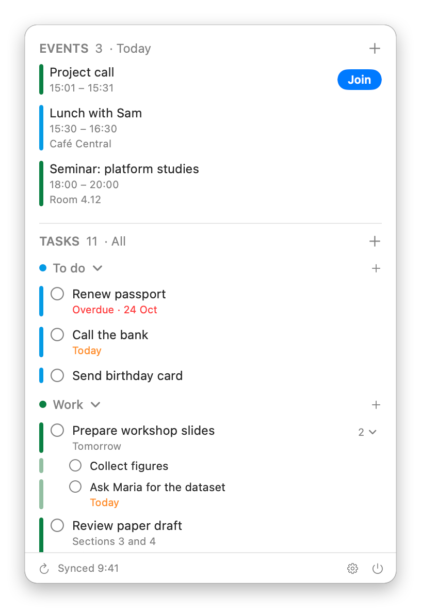
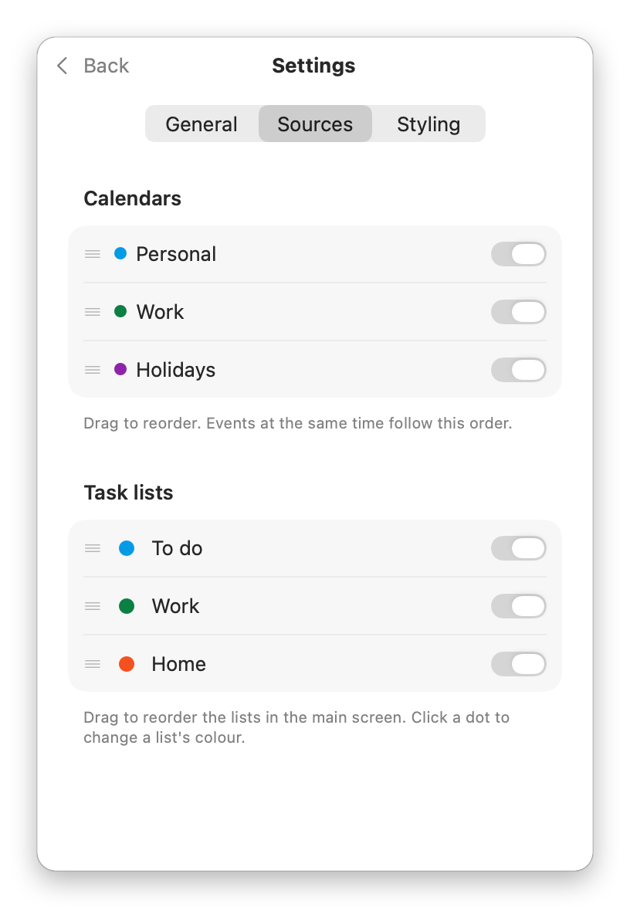

Your Google Calendar and Google Tasks in the Mac menu bar
machen is a small, free app for the Mac menu bar. It shows your upcoming events and open tasks from one or more Google accounts in one list, and lets you add and change them without opening a browser.
Download machenor with Homebrew: brew install bernorieder/machen/machen
Free and open source · macOS 14 or later · Mac with Apple silicon


What it does
- Events: shows the events of your Google calendars for today, or for up to two weeks ahead.
- Tasks: shows your open tasks from Google Tasks, grouped by list and sorted by due date, with subtasks under their task.
- Editing: add, change and delete events and tasks, create task lists, move events to another calendar and tasks to another list, and mark tasks as done, with a few seconds to undo.
- Several accounts: connect more than one Google account, for example a personal and a work account.
- Video calls: events with a Google Meet, Zoom, Teams or similar link get a Join button.
- Notifications: the reminders you've set in Google Calendar appear as Mac notifications.
- Offline: shows the events and tasks it last loaded, and keeps your changes until you're back online.
machen works only with Google Calendar and Google Tasks. It doesn't show a calendar grid, and it can't invite people to events. The README on GitHub lists everything it does and doesn't do.
How machen uses your Google data
When you connect a Google account, machen asks Google for three permissions. It uses them only to show your calendars, events and tasks in the app, to make the changes you make in the app, and to show your event reminders as notifications on your Mac.
| Permission | What machen does with it |
|---|---|
| See the list of Google calendars you're subscribed to | Shows your calendars with their names and colours, uses their default reminders, and identifies the account by its address. |
| View and edit events on all your calendars | Shows your events, and adds, changes, moves and deletes events when you do so in machen. |
| Create, edit, organize, and delete all your tasks | Shows your open tasks, and creates task lists and adds, changes, moves, completes and deletes tasks when you do so in machen. |
- No server in between. machen talks directly to Google from your Mac. Your data isn't sent to the developer or to anyone else.
- Stored only on your Mac. Your sign-in is kept in the macOS Keychain, and a copy of the last loaded events and tasks is kept so machen can show them offline.
- Nothing else. No analytics, no ads, no tracking. Your data isn't sold, shared, or used to train AI models.
- Your choice. Removing an account in machen's settings revokes its access and deletes its data from your Mac. You can also revoke access at myaccount.google.com/permissions.
The privacy policy has the details.
Installation
- Download
machen-<version>.dmgfrom the latest release. - Open it and drag machen into your Applications folder.
- Open machen. Its icon appears in the menu bar.
- Click the icon, then Sign in with Google, and allow access in your browser.
With Homebrew, instead of the first two steps, run this in Terminal:
brew install bernorieder/machen/machenTo add another account, open Settings → Sources and click Add Google Account.
To update, download the new version and drag it into Applications, replacing the old one, or run brew upgrade machen. Your settings and sign-in are kept.